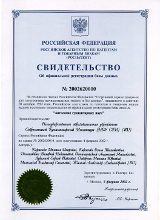

Российский ученый, инженер, изобретатель, один из основателей электронного образования в России
Владимир ЖириновскийСветский политический деятель
Геннадий ЗюгановСветский политический деятель
Ирина ХакамадаСветский политический деятель
Отзывы о деятельности
01
БИОГРАФИЯ
Михаил Петрович Карпенко, президент Современной гуманитарной академии (СГА), профессор, доктор технических наук, родился в Москве в 1936 году. Получил два высших образования, окончив Московский институт инженеров геодезии и картографии (1960 г) и Московский институт нефтехимической и газовой промышленности (1966 г).
ДЕТСТВО.
Михаил Петрович Карпенко родился 15 октября 1936 г. в Москве. Отец — Карпенко Петр Иванович. Мать — Толчинская Фанико Семеновна.
Отец — ответственный работник Наркомата, в 1930-годы Начальник Московско-Курской железной дороги. В 1937 году был арестован и расстрелян по ложному обвинению. В 1956 году реабилитирован посмертно.
Мать — партийный работник, работник Обкома ЦКП Воронежа, зав секретарем народного образования и культуры, в 1930-годы помощник Председателя Моссовета по культурной части.
В 1937 году была осуждена как Член семьи изменника Родины на 8 лет ИТЛ. Отбывала срок в Акмолинском лагере, а затем в Кзалтау Карагандинской области. В 1955 году реабилитирована.
ОБРАЗОВАНИЕ (МИИГАиК)
В 1954 году поступил на геодезический факультет Московского института инженеров геодезии, аэрофотосъемки и картографии (МИИГАиК) на обучение по специальности «инженерная геодезия». В период обучения в институте каждое лето принимал участие в изыскательских экспедициях от МОСГИДЕПа, ПИ №2 и др. организаций, в картографических съемках в районе Горьковского моря, Красноярского аллюминиевого завода, в Тюменской области и др. Многие из его однокурсников — Алексей Пименов, Лидия Рыхлова, Феликс Василевский, Игорь Ларин, Александр Зингер — после окончания института успешно работали в различных областях деятельности. Важный след в жизни, несомненно, оставили преподаватели и профессора вуза: профессор математики Концевич, Венцель, Вировец, Мазмишвили, ректор вуза Муравьев (преподававший начертательную геометрию) и др.
РАБОТА В ГИПРОТРУБОПРОВОДЕ. ИЗЫСКАНИЯ.
После окончания вуза в 1960 году по распределению поступил на работу Гипротрубопровод, в отдел технических измерений. Участвовал в изысканиях трасс магистральных трубопроводов и площадок перекачечных станций: Куйбышев – Мозырь, Унеча – Полоцк, Ярославль – Кириши, Усть – Балык – Омск, Хашури – Батуми, «Московское газовое кольцо», ЛЭП Брянск – Унеча, участков трубопроводов – «Александровское - Анжеро - Судженск». Его перу принадлежит исполняемый до сих пор отделом изысканий Института гипротрубопроводов «Гимн отдела изысканий» – «Домой, скорей домой».
РАБОТА В ВНИИСТЕ, ДОСТИЖЕНИЯ В СФЕРЕ ПРОЕКТИРОВАНИЯ И СТРОИТЕЛЬСТВА НЕФТЕПРОВОДОВ.
В 1966 году заочно окончил Московский институт нефтехимической и газовой промышленности по специальности «инженер-механик» и был переведен на работу в научно-исследовательский институт по строительству магистральных трубопроводов (ВНИИСТ). М.П. Карпенко зарекомендовал себя как авторитетный специалист в области строительства и эксплуатации магистральных нефтепроводов, баз и хранилищ.
В 1972 году защитил диссертацию по выбору оптимальных трасс магистральных трубопроводов, получив степень кандидата технических наук. В 1975 году за участие в научном обеспечении строительства сверхмощных газопроводов был награжден орденом «Знак Почета».
В 1982 г. Защитил докторскую диссертацию по строительству магистральных трубопроводов. За разработку и внедрение методов поточно-скоростного строительства трансконтинентального газопровода Уренгой – Помары – Ужгород был награжден Государственной премией СССР в области науки и техники (1984 г.).
РАБОТА В СФЕРЕ ОБРАЗОВАНИЯ.
С 1988 г. основная работа М.П. Карпенко переносится в сферу образования. Возглавляя кафедру Центрального межведомственного института повышения квалификации руководящих работников и специалистов строительства МИСИ (Москва), занимался развитием новых способов обучения, получил звание профессора. В 1992 основал новый вуз — Современная гуманитарная академия, основанный на широком использовании информационных и телекоммуникационных технологий, где непрерывно совершенствуются и широко внедряются инновации в области образовательных технологий, дидактических основ обучения и материально-технического оснащения распределенного вуза. В области образовательных технологий и дидактических основ обучения им получено около 200 авторских свидетельств и патентов.
Под руководством М.П. Карпенко СГА первой в России начала использовать в обучении спутниковые технологии, первой создала поточное производство учебных продуктов и материалов, разработала информационно-интеллектуальные методы академического администрирования. Под его руководством к 2002 г. СГА вошла в число крупнейших университетов мира, а в России, СНГ и Европе она стала самым большим вузом.
СОВРЕМЕННАЯ ГУМАНИТАРНАЯ АКАДЕМИЯ.
Деятельность М.П. Карпенко получила широкое общественное и государственное признание. Он награжден орденами и медалями Советского Союза и Российской Федерации, высокими знаками отличия общественных организаций. За разработку научно-методических и организационно-технических основ Федеральной университетской сети дистанционного обучения ректор СГА был удостоен премии Правительства РФ в области образования за 2000 г, а в 2005 г. стал победителем Всероссийского конкурса «Лидер в образовании». А в 2006 г. Указом президента РФ за большой вклад в развитие отечественной науки и многолетнюю плодотворную деятельность был награжден орденом Дружбы.
Многие российские и зарубежные академии приняли профессора М.П. Карпенко в действительные члены. В Российской академии естественных наук и Международной академии информатизации он руководит отделениями дистанционных и образовательных технологий, является вице-президентом Международного союза общественных академий наук, членом Межгосударственного комитета СНГ по распространению образования и образованию взрослых, членом Президиума Международной ассоциации «Знание», членом Высшего Совета Национального Комитета «Интеллектуальные ресурсы России» и других организаций, разрабатывающих вопросы образования. Его благотворительная деятельность связана с работой фондов «Культура и образование в экстремальных условиях», «Правозащитник России».
02
НАУЧНАЯ ДЕЯТЕЛЬНОСТЬ
Михаил Петрович очень уважаем коллективом нашей фирмы, коллеги считают его настоящим товарищем, он очень отзывчив и доброжелателен, руководство ценить его как хорошего сотрудника. Михаил Петрович прекрасно находит язык с партнерами и клиентами нашей организации. Все замечают его вежливость и обходительность.
31.08.2017
Михаил Петрович очень уважаем коллективом нашей фирмы, коллеги считают его настоящим товарищем, он очень отзывчив и доброжелателен, руководство ценить его как хорошего сотрудника. Михаил Петрович прекрасно находит язык с партнерами и клиентами нашей организации. Все замечают его вежливость и обходительность.
31.08.2017
Михаил Петрович очень уважаем коллективом нашей фирмы, коллеги считают его настоящим товарищем, он очень отзывчив и доброжелателен, руководство ценить его как хорошего сотрудника. Михаил Петрович прекрасно находит язык с партнерами и клиентами нашей организации. Все замечают его вежливость и обходительность.
31.08.2017
Михаил Петрович очень уважаем коллективом нашей фирмы, коллеги считают его настоящим товарищем, он очень отзывчив и доброжелателен, руководство ценить его как хорошего сотрудника. Михаил Петрович прекрасно находит язык с партнерами и клиентами нашей организации. Все замечают его вежливость и обходительность.
31.08.2017
Михаил Петрович очень уважаем коллективом нашей фирмы, коллеги считают его настоящим товарищем, он очень отзывчив и доброжелателен, руководство ценить его как хорошего сотрудника. Михаил Петрович прекрасно находит язык с партнерами и клиентами нашей организации. Все замечают его вежливость и обходительность.
31.08.2017
Михаил Петрович очень уважаем коллективом нашей фирмы, коллеги считают его настоящим товарищем, он очень отзывчив и доброжелателен, руководство ценить его как хорошего сотрудника. Михаил Петрович прекрасно находит язык с партнерами и клиентами нашей организации. Все замечают его вежливость и обходительность.
Прогресс науки и технологий цивилизации развитых стран бросает новый вызов глобальному социуму - вытесняются из производства и услуг новые контингенты работников. Чтобы справиться с депрессией, вызванной сокращением рабочих мест в производстве, необходимо принять энергичные меры по социализации больших контингентов, а это возможно только через образование.
В ближайшее время образованию для выживания любого этноса будет принадлежать главенствующая роль и одной из важнейших наук станет научная дидактика, опирающаяся на когнитивные науки и информатизацию. Электронная информационно – образовательная среда является главным инструментом предоставления образовательных услуг с использованием современных информационных и телекоммуникационных технологий. При выборе критерия качества ЭИОС не могут быть использованы профессиональные и творческие достижения выпускников, так как они в большей степени зависят от способностей личности, чем от метода обучения.
В виде критерия качества электронной информационно – образовательной среды нельзя использовать характеристики информационного и телекоммуникационного оборудования, так как оно беспрерывно совершенствуется, к тому же нельзя по отдельным частям судить о качестве целого.
Главным преимуществом электронной информационно – образовательной среды над традиционно применяемыми образовательными средами является увеличение количества функций, выполняемых технологически продвинутой средой, поэтому и критерий ее качества должен быть функциональным.
Методы и среда электронного обучения позволяют совершить прорыв в изучении социально-психологических характеристик студентов и других обучающихся по данным, полученным в результате применения в учебном процессе массового ассессмента в виде оценки самими обучающимися учебных работ коллег.
Контактно-групповой метод решает задачи массового образования, но требует от общества больших жертв – содержания целой армии педагогов, строительства громадного количества специальных зданий – школ, кампусов вузов, общежитий и др., перемещения больших масс людей внутри поселений и межгородского, значительного обострения проблемы чрезмерной урбанизации, вымывания молодежи из провинции, из малых городов и поселений, имеет также много других недостатков.
Однако, благодаря быстрому прогрессу информационных и телекоммуникационных технологий, носящему взрывной, революционный характер, уже сложились условия для отмены ненужных ограничений и перехода образования на другую парадигму, назовем ее индивидуальной непрерывной.
Главное, что образование получает от информационно–коммуникационных технологий, – это возможность получать и перерабатывать гигантские объемы информации, применяя для этого и вообще для всего образовательного процесса интеллектуальные роботы и устройства искусственного интеллекта.
История развития цивилизации показывает, что приход новых технологий практически полностью отрицает не только старые технологии, но также подходы, парадигмы, организационные формации и накопленный опыт. Все начинается с нуля. Каменный век закончился не потому, что закончились камни, а потому, что у человечества появились металлы. Что взяло огнестрельное оружие от луков и стрел? Что взял автомобильный транспорт от гужевого? Электрические приводы от мускульных? Компьютеры от счетов? Принтеры от глиняных таблиц? Ответ - ничего, и накопленный опыт использования устаревших технологий, как правило, в новых условиях непригоден.
Трудно начинать с нуля, не обращать внимания на былые заслуги, довериться не проверенной жизнью практике, не положительному опыту, а новым экспериментальным исследованиям, идти вперед сквозь строй консерваторов и ретроградов. Но на острие прогресса в ближайшее время будут только те образовательные системы, которые совершат революционные преобразования в дидактике и технологии, полностью освоив новые реалии информационных процессов.
Миссия элитных вузов – генерация элиты, однако с появлением сетевых технологий и всеобщего открытого доступа в информационное пространство, функция генерации элиты уходит из университета. Возникают виртуальные институты, объединяющие личности без условия их совместного проживания для общения. О науке говорить не будем, в России наука делается в профессиональных исследовательских институтах. Что же остается элитным вузам? Образование. Но в этой области они опускаются на уровень обычных массовых вузов и уподобляются престарелым боксерам, с негодованием взирающим на молодых, полных энергии соперников.
Развившийся в России и в отрасли образования примат юридических подходов над соображениями здравого смысла, справедливости, категорическим императивом (по Канту) привел к торжеству юристократии, к созданию системы законодательных предписаний и ограничений, подобно болезни-сколиозу сковывающей живой и гибкий костяк инициатив и инноваций, всегда существующей в социуме благодаря разумной и предприимчивой природе человека - гомосапиенса.
Образование является одной из самых консервативных отраслей человеческой культуры. Достижения цивилизации в виде новых революционных технологий, меняющих привычный быт человека, крайне медленно осваиваются сферой образования. Например, кино и телевидение десятилетиями пытались, но так и не сумели существенно потеснить книги и преподавателей в практической дидактике. Однако в настоящее время мы находимся на пороге не реформы и не модернизации, а самой радикальной революции не только методов и форм, но и подходов, нового понимания миссии образования в человеческом социуме.
Сейчас же установлено значительное влияние образования на физиологию и материальное благополучие человека, на экономику и устойчивость развития социума, этноса и государства. Выяснилось, что образованные люди имеют лучшее здоровье и дольше живут.
До сих пор широко применяющаяся консервативная дидактика, разработанная в XVII веке и опирающаяся на классно-урочный и лекционно-семинарский методы, в принципе не может быть использована для разворачивания массового высшего и непрерывного образования, так как она требует затрат чрезмерно больших материальных и трудовых ресурсов, создает непреодолимые организационные трудности благодаря кампусному методу обучения и неэффективна в когнитивном плане, так как использует не индивидуальные, а коллективные, групповые формы обучения.
К сожалению, процесс революционных преобразований в образовании затрудняется практическим отсутствием образовательной науки. Образование до сих пор выступает в роли служанки других наук, а собственная наука развита слабо. Накапливаются многочисленные факты и наблюдения о влиянии образования на различные явления социальной жизни, о значении архитектуры образовательных структур, архитектуры учебных занятий, о влиянии когнитивного потенциала на успешность учебного процесса и т.д., но практически отсутствует системное обобщение этих фактов. Существует название образовательной науки – эдукология, однако ее вклад в жизненно-важные решения и действия в сфере образования незначителен.
Любому выпускнику придется работать в коллегиальной среде, но получить такие навыки в вузе практически невозможно, так как между студентом и его коллегами стоит преподаватель. В то же время информационные и веб-технологии предоставляют возможности индивидуального подхода и неограниченного общения студентов. Задачей дидактов является разработка таких форм общения студентов, которые приносили бы пользу учебному процессу и готовили бы студентов к той роли, которую им придется играть после окончания обучения.
03
ИЗОБРЕТЕНИЯ

Свидетельство об официальной регистрации базы даных
Дата регистрации: 02.08.1998
Название изобретения
Дата регистрации: 02.08.1998
Название изобретения
Дата регистрации: 02.08.1998
Название изобретения
Дата регистрации: 02.08.1998
Название изобретения
Дата регистрации: 02.08.1998
Название изобретения
Дата регистрации: 02.08.1998
Название изобретения
Дата регистрации: 02.08.1998
Название изобретения
Дата регистрации: 02.08.1998
Название изобретения
Дата регистрации: 02.08.1998
Название изобретения
Дата регистрации: 02.08.1998
Название изобретения
Дата регистрации: 02.08.1998
Название изобретения
Дата регистрации: 02.08.1998
04
НАГРАДЫ
ГОД ПОЛУЧЕНИЯ
НАГРАДА
НАГРАЖДАЮЩИЙ ОРГАН
1953
Серебряная медаль За большие успехи, обнаруженные при окончании средней школы; и отличное поведение
Московский городской отдел народного образования
1973
Серебряная медаль За достигнутые успехи в развитии народного хозяйства СССР
Главный комитет ВДНХ СССР
1953
Грамота Первомайский РК ВЛКСМ За активную работу по воспитанию молодежи в системе политпросвещения
РК ВЛКСМ
1975
Золотая медаль За достигнутые успехи в развитии народного хозяйства СССР
Главный комитет ВДНХ СССР
1975
Орден «Знак почета»
Президиум Верховного Совета СССР
1977
Серебряная медаль За достигнутые успехи в развитии народного хозяйства СССР
Главный комитет ВДНХ СССР
1975
Золотая медаль За достигнутые успехи в развитии народного хозяйства СССР
Главный комитет ВДНХ СССР
1953
Серебряная медаль За большие успехи, обнаруженные при окончании средней школы; и отличное поведение
Московский городской отдел народного образования
1973
Серебряная медаль За достигнутые успехи в развитии народного хозяйства СССР
Главный комитет ВДНХ СССР
1953
Грамота Первомайский РК ВЛКСМ За активную работу по воспитанию молодежи в системе политпросвещения
РК ВЛКСМ
05
ВИДЕО
Название телепередачи
1 марта, 2016
Название телепередачи
1 марта, 2016
Название телепередачи
1 марта, 2016
Название телепередачи
1 марта, 2016
Название телепередачи
1 марта, 2016
Название телепередачи
1 марта, 2016
Высшее образование: формальное и неформальное образование
2 апреля, 2015
Высшее образование: академическое и профессиональное образование
19 марта, 2015
Что такое образование?
16 марта, 2015
Высшее образование: гуманитарное и техническое образование
26 марта, 2017
Что даёт образование обществу? В чём преимущество человека с высшим образованием
12 марта, 2015
Высшее образование: формальное и неформальное образование
31 марта, 2017
06
ФОТО
Гости СГА
127
С Федором Конюховым
127
Конференции
127
Семья
127
Гости СГА
127
07
ПРОЕКТЫ
НЕЙРОДИДАКТИКА
Михаил Петрович очень уважаем коллективом нашей фирмы, коллеги считают его настоящим товарищем, он очень отзывчив и доброжелателен, руководство ценить его как хорошего сотрудника. Михаил Петрович прекрасно находит язык с партнерами и клиентами нашей организации. Все замечают его вежливость и обходительность.
ОБУЧЕНИЕ ЭКСТРИМАЛЬНЫХ УСЛОВИЯХ
Михаил Петрович очень уважаем коллективом нашей фирмы, коллеги считают его настоящим товарищем, он очень отзывчив и доброжелателен, руководство ценить его как хорошего сотрудника. Михаил Петрович прекрасно находит язык с партнерами и клиентами нашей организации.
РЕССОАЦЛИЗАЦИЯ ОСУЖДЕННЫХ
Михаил Петрович очень уважаем коллективом нашей фирмы, коллеги считают его настоящим товарищем, он очень отзывчив и доброжелателен, руководство ценить его как хорошего сотрудника. Михаил Петрович прекрасно находит язык с партнерами и клиентами нашей организации. Все замечают его вежливость и обходительность.
ВИГОРНОСТЬ
Вигоросность (от лат. vigorous — бодрый, сильный, энергичный) — качество личности, характеризующееся высокой энергичностью, активностью, стремлением к достижению цели и преодолению препятствий. обходительность.
ВИГОРНОСТЬ
Опираясь на идеи академика В.И.Вернадского о биохимической энергии живого вещества биосферы и описанный Л.Н. Гумилевым феномен пассионарности, профессор М.П. Карпенко продолжил исследования особой человеческой энергии, являющейся основой инновационного развития, разработки и внедрения новых подходов и технологий. Специфика этой активности такова, что люди в той или иной степени не могут следовать только путем слепого подчинения сложившимся стереоти¬пам, но испытывают потребности в достижениях, в непрестанном улучшении, рационализации труда, быта, досуга, в новизне своей деятельности, в творчестве. Это новаторская, преобразовательная энергия, коренящаяся в самом человеке. Растрачиваясь, энергия уходит на создание культуры, строительство городов, на создание идеологий и политическую деятельность, на территориальную экспансию и войны, т.е. на тот труд, результат которого есть сегодняшняя человеческая цивилизация.
Научным коллективом, во главе с М.П Карпенко впервые был осуществлен переход от философски-исторического изучения такой человеческой активности к экспериментальному исследованию. Для исследования природы пассионарности через отдельных ее представителей – пассионариев, М.П. Карпенко было предложено обозначить это личностное явление термином «вигоросность». Вигоросность (от лат. vigorous – бодрый, сильный, энергичный) — качество личности, характеризующееся высокой энергичностью, активностью, стремлением к достижению цели и преодолению препятствий.
Концептуальный переход от понимания пассионарности как движущей силы этногенеза к вигоросности как свойству отдельных индивидов и социальных групп позволил разработать диагностический комплекса изучения этого явления. Психологические характеристики вигоросного поведения выявляют разработанный в СГА «Опросник вигоросности личности», который после психометрической проверки и модернизации получил наименование VPI (Vigorous Personality Inventory). Для диагностики глубинных ценностных ориентаций, являющихся базой вигоросности, в СГА была разработана психолингвистическая проективная методика CPWT (Сhoice passionarity words techniques), основанная на предпочтении вигоросами отдельных слов русского языка. Факты жизненного пути и поведенческие признаки вигоросности фиксировались с помощью анкеты «Внешний критерий пассионарности». Оценка вигоросности осуществляется и на психофизиологическом уровне – путем оценки энергетической напряженности в подсистемах головного мозга за счет регистрации параметров ориентировочной реакции на новые стимулы в условиях неопределенности с помощью программно-аппаратного комплекса «Вигорос».
Проведенные под руководством М.П.Карпенко исследования подтвердили связь вигоросности с биохимическими процессами и со спецификой энергетической напряженности в подсистемах головного мозга человека. В ходе эмпирических исследований уточнена психологическая структура и содержание вигоросности, показана ее роль в успешности деятельности современных предпринимателей. Отдельным направлением является изучение роли образовательной среды для развития вигоростности. Полученные научные результаты представлены в ряде научных публикаций и докладывались на конференциях. Разработка метода объективной диагностики предрасположенности к вигоросности получила патент Российской федерации (Система измерения энергетической напряженности в подсистемах головного мозга. [Текст] : пат. на полез. модель № RU 00093658 U1 Рос.Федерация: МПК А 61В 5/503/ Карпенко М.П., Логинов В.В., Чмыхова Е.В., Зорин Ю.В., Лаврова Т.П., Сергеев И.К., Давыдов Д.Г.; заявитель и патентообладатель НОУ Современная гуманитарная академия. – № 2008131674/22; заявл. 1.08.2008; опубл. 10.05.2010, Бюл. № 13.)
Вопросу вигоростности была посвящена организованная М.П. Карпенко в 2007 году Всероссийская междисциплинарная научно-практическая конференция "Пассионарная энергия и этнос в развитой цивилизации". Результаты многолетних исследований под руководством М.П.Карпенко обобщены в вышедшей в 2011 году монографии «Вигоросность и инновации (человеческий фактор как основа модернизации)»
Разница между двумя самыми знаменитыми футболистами Марадонной и Лужковым заключается в том, что в свободное от футбола время Марадонна нюхает кокаин, а Лужков обустраивает Москву.
Праздность – мать всех пороков.
Помнят те, кто любит.
Любой успех складывается из множества мелких неудач.
Права даются для выполнения обязанностей.
Хорошая организация при плохом оборудовании всё же лучше, чем хорошее оборудование при плохой организации.
Не следует делать из молодости профессию.
Не найдешь счастья в труде - не найдешь его нигде.
Чем больше ставится новых задач, тем меньше спрашивают решение старых.
Слово «техника» происходит от греческого слова «технэ» - искусство.
В науке, как и в спорте, важен не результат, важно участие.
На всякой работе страшно не когда тебя ругают, а когда перестают замечать.
Руководя делом, будь смел и решителен. Ничто так не компрометирует руководителя, как безынициативность и трусость.
Не критикуй врага, иначе он избавится от своих недостатков.
Многократно повторенная ошибка – это и есть проверенная жизнью практика.
Такт это умение замолчать раньше, чем тебя попросят.
Новейшая история показывает, что уровень жизни народа обратно пропорционален заботам правительства. Чем больше старается правительство, тем хуже живет народ.
Любовь это дружба, не знающая границ.
Чем больше правитель осчастливил народ, тем сильнее он ограничил его свободу.
Лучше иметь хорошие отношения с плохим начальником, чем плохие с хорошим.
Жизнь не так проста, как кажется, она еще проще.
Большинство ученых не столько внесли в науку, сколько вынесли из нее.
Если хочешь погубить человека, позволь ему делать все, что он пожелает.
Жизнь это борьба, иногда классическая, а иногда и вольная.
Чем больше благ должен принести людям новый закон, тем больше он приносит ограничений и неприятностей.
Мало иметь совесть, надо чтобы она тебя еще и мучила.
Счастье расчетливых не любит.
Будь всегда с людьми, но делай то, что считаешь нужным.
Страна должна управляться не людьми, а законами.
Грязь это вещество не на своем месте.
Кто хочет сделать дело, ищет способы, а кто не хочет – причины.
Порядочный человек – это тот, кто делая подлости, не получает удовольствия.
Больше всего ждут те, которым некогда.
Ромео и Джульетта не любили бы друг друга так пылко, если бы родители не были против.
Всадник может быть без головы, но лошадь – нет.
Воспитанный человек – не тот, кто не крадет кур, а тот, кто не замечает, как это делают другие.


{kind=link}
{kind=link}